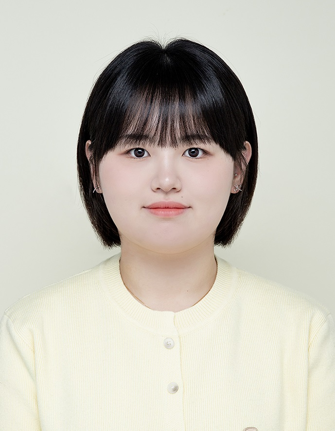

업무를 나눈다
입력 자료, 담당 역할, 실행 순서, 산출물, 완료 기준으로 쪼갭니다.
내 업무를 나누면, AI가 함께 일한다 — Claude Code로 배우는 에이전트 오케스트레이션
일정 확인부터 문서 작성, 검수, 메일 전송까지. 반복되는 업무를 AI에게 나누어 맡기고, 사람은 기준을 세우고 최종 판단을 내립니다.
입력 자료, 담당 역할, 실행 순서, 산출물, 완료 기준으로 쪼갭니다.
문서 작성 에이전트와 검수 에이전트에게 각자의 일을 위임합니다.
불확실한 정보와 발송 전 수신자·첨부를 사람이 최종 확인합니다.

대전지점
Claude Code로 반복되는 사무 업무를 AI 에이전트 팀에 나누어 맡기는 방법을 함께 실습합니다.
Anthropic은 LLM이 도구와 함께 일하는 시스템을 통틀어 에이전틱 시스템이라 부르고, 그 흐름을 누가 정하느냐에 따라 워크플로와 에이전트로 나눕니다.
LLM과 도구가 미리 정해 둔 코드 경로를 따라 움직입니다. 단계와 순서가 고정되어 있어 예측 가능하고 안정적입니다.
흐름을 정하는 주체 → 사람(개발자)
LLM이 스스로 작업 과정과 도구 사용을 결정합니다. 결과를 보고 다음 행동을 고르며 목표를 향해 나아갑니다.
흐름을 정하는 주체 → 모델(AI)
에이전트의 출발점은 LLM에 세 가지 능력을 붙인 것입니다. 모델은 무엇을 찾고, 어떤 도구를 쓰고, 무엇을 기억할지 스스로 고릅니다.
필요한 자료를 직접 찾아 읽습니다. 예: 업무 목록, 지난 회의록
캘린더 조회, 파일 작성, 메일 발송처럼 실제 행동을 수행합니다. MCP로 연결합니다.
프로젝트 지침과 규칙, 이전 결과를 기억하고 다음 작업에 활용합니다.
핵심은 단순합니다. 환경의 피드백을 보며 도구를 쓰는 LLM이 루프를 도는 구조입니다.
사람의 요청으로 작업을 시작합니다.
무엇을 어떤 순서로 할지 스스로 정합니다.
파일을 읽고, 쓰고, 서비스를 호출합니다.
실행 결과로 진행 상황을 판단하고 필요하면 사람에게 묻습니다.
완료 기준을 채우거나 중단 조건에 닿으면 멈춥니다.
여러 작업과 에이전트가 어떤 순서와 기준으로 협업할지 조율하는 것이 오케스트레이션입니다. Anthropic이 정리한 대표 패턴은 다섯 가지입니다.
작업을 고정된 단계로 나누고 앞 단계의 결과를 다음 단계에 넘깁니다.
입력을 먼저 분류한 뒤 알맞은 전문 처리로 보냅니다.
독립적인 작업을 동시에 실행하고 결과를 합칩니다.
중앙의 LLM이 작업을 그때그때 나누어 워커에게 맡기고 결과를 종합합니다. 필요한 하위 작업을 미리 알 수 없을 때 씁니다.
오늘 실습: 메인 Claude + 작성·검수 서브에이전트
한쪽이 만들고 다른 쪽이 평가·피드백하는 과정을 반복해 품질을 높입니다.
가장 단순한 방법으로 시작하고, 복잡도는 필요할 때만 높입니다.
에이전트의 계획과 진행 단계를 눈에 보이게 드러냅니다.
에이전트가 쓰는 도구의 설명과 사용법을 명확히 문서화하고 테스트합니다.
출처: Anthropic, Building effective agents (2024). 수업용으로 요약·재구성했습니다.
실습 주제는 “내일 회의 자료를 준비하고 참석자에게 공유하기”입니다. 일곱 단계를 따라 개념에서 시연, 실습, 적용까지 이어집니다.
일정에서 회의자료와 메일 초안이 만들어지는 결과를 먼저 봅니다.
내 업무와 연결되는 활용 장면
에이전트와 오케스트레이션, 역할 분담과 작업 순서를 이해합니다.
전체 업무 흐름에 대한 이해
CLAUDE.md, .claude/rules, .claude/agents, 양식·원자료 폴더와 서비스 연결을 살펴봅니다.
규칙·역할·양식·도구 연결의 구분
일정 조회 → 원자료 확인 → 양식 기반 작성 → 검수 → 메일 초안 → 확인 후 테스트 발송
처음부터 끝까지 이어지는 실행 과정
규칙이나 양식 조건을 바꾸고 문서와 메일 초안을 직접 생성합니다.
문서, 검수 결과, 메일 초안
자료 누락, 일정 불일치, 수신자 미정, 중복 처리 문제를 확인합니다.
사람이 판단해야 하는 항목
내 반복 업무를 같은 구조로 나누어 보고 질문을 나눕니다.
개인별 적용 과제 1개
정품 macOS와 Windows 기준입니다. 쓰는 운영체제를 고른 뒤 권장 명령어 하나만 실행하면 됩니다.
$ curl -fsSL https://claude.ai/install.sh | bashbrew upgrade claude-code로 직접 합니다.$ brew install --cask claude-codePS C:\로 시작하면 PowerShell입니다.PS> irm https://claude.ai/install.ps1 | iexC:\로 시작하면 CMD입니다.> curl -fsSL https://claude.ai/install.cmd -o install.cmd && install.cmd && del install.cmdwinget upgrade Anthropic.ClaudeCode로 직접 합니다.PS> winget install Anthropic.ClaudeCodeGit for Windows를 설치해 두면 Claude Code가 Bash 도구를 쓸 수 있습니다. PowerShell에서 && 오류가 나거나 CMD에서 'irm' 오류가 나면, 지금 쓰는 셸에 맞는 명령어로 바꿔 실행하세요.
버전이 출력되면 설치 완료입니다.
claude --version문제가 있을 때 설치 상태를 진단합니다.
claude doctor프로젝트 폴더에서 실행하고 브라우저 안내에 따라 로그인합니다.
cd 내-프로젝트
claudeClaude Code는 Pro, Max, Team, Enterprise 또는 Console 계정이 필요합니다. 무료 플랜에는 포함되지 않습니다. 출처: Claude Code 공식 설치 문서